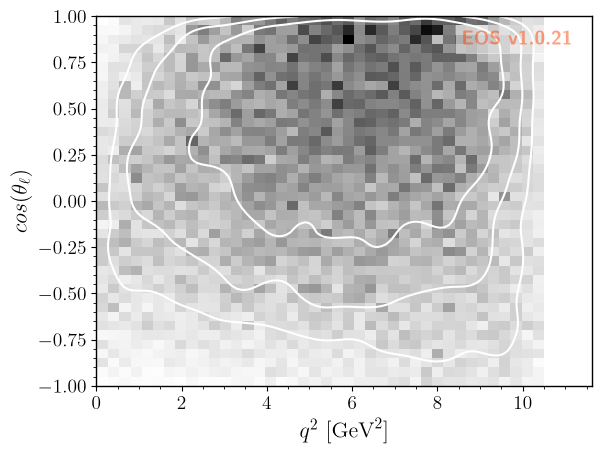
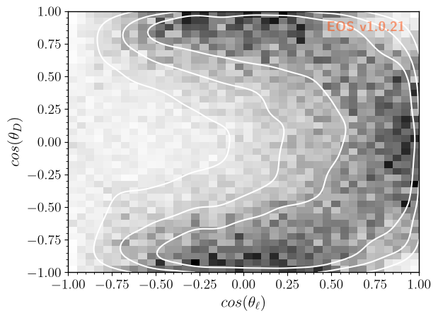
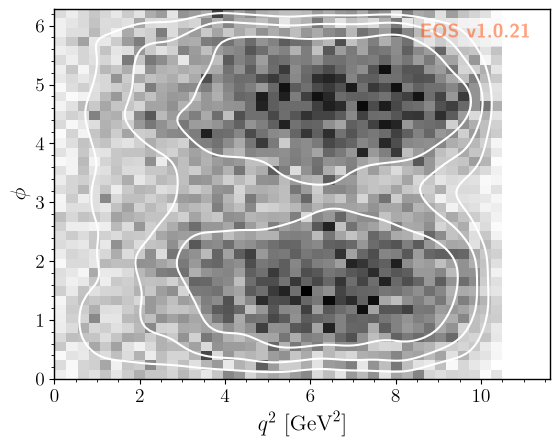

Simulation of Pseudo Events
EOS can simulate pseudo events from any of its built-in PDFs using Markov chain Monte Carlo techniques. The examples following in this section illustrate how to find a specific PDF from the list of all built-in PDFs, simulate the pseudo events from this object, compare to the pseudo events with the analytic results, and plot 1D and 2D histograms of the pseudo events.
[1]:
import eos
import numpy as np
Listing the built-in Probability Density Functions
The full list of built-in probability density functions (PDFs) for the most-recent EOS release is available online here. You can also show this list using the eos.SignalPDFs class.
[2]:
eos.SignalPDFs(prefix='B->Dlnu')
[2]:
| qualified name |
|---|
| Signal PDFs in (semi)leptonic $b$-hadron decays |
| Signal PDFs in semileptonic $B\to P \ell^-\bar\nu$ decays |
| B->Dlnu::P(q2) |
| B->Dlnu::P(q2,cos(theta_l)) |
Setting the Stage
For latter use, we create a dedicated directory to store the pseudo events that we will produce in short order. Similar to the previous chapters, we will store the name of that directory in the global variable EOS_BASE_DIRECTORY:
[3]:
EOS_BASE_DIRECTORY='./simulation-data'
import os
if not os.path.exists(EOS_BASE_DIRECTORY):
os.makedirs(EOS_BASE_DIRECTORY)
Constructing a 1D PDF and Simulating Pseudo Events
We construct the one-dimension PDF describing the decay distribution in the variable \(q^2\) and for \(\ell=\mu\) leptons. We create the q2 kinematic variable and set it to an arbitrary starting value. We set boundaries for the phase space from which we want to sample through the kinematic variables q2_min and q2_max. If needed, we can shrink the phase space to a volume smaller than physically allowed. The normalization of the PDF will automatically adapt.
We simulate stride * N=250000 pseudo events/samples from the PDF, which are thinned down to N=50000. The Markov chains can self adapt to the PDF in preruns=3 preruns with pre_N=1000 pseudo events/samples each.
[4]:
mu_kinematics = eos.Kinematics({
'q2': 2.0, 'q2_min': 0.02, 'q2_max': 11.6,
})
mu_pdf = eos.SignalPDF.make('B->Dlnu::P(q2)', eos.Parameters(), mu_kinematics, eos.Options())
rng = np.random.mtrand.RandomState(74205)
mu_samples, mu_density = mu_pdf.sample_mcmc(N=50000, stride=5, pre_N=1000, preruns=3, rng=rng)
mu_weights = np.ones((len(mu_samples),), dtype=np.float64) / len(mu_samples)
eos.data.ImportanceSamples.create(os.path.join(EOS_BASE_DIRECTORY, 'B-to-Dmunu-1D', 'samples'), [mu_kinematics['q2']], mu_samples, mu_weights, mu_density)
Prerun 0 out of 3
Prerun 0: acceptance rate is 86%
Prerun 1 out of 3
Prerun 1: acceptance rate is 39%
Prerun 2 out of 3
Prerun 2: acceptance rate is 32%
Main run: started ...
Main run: acceptance rate is 30%
We repeat the exercise for \(\ell=\tau\) leptons, and adapt the phase space accordingly.
[5]:
tau_kinematics = eos.Kinematics({
'q2': 4.0, 'q2_min': 3.17, 'q2_max': 11.6,
})
tau_pdf = eos.SignalPDF.make('B->Dlnu::P(q2)', eos.Parameters(), tau_kinematics, eos.Options(l='tau'))
rng = np.random.mtrand.RandomState(74205)
tau_samples, tau_density = tau_pdf.sample_mcmc(N=50000, stride=5, pre_N=1000, preruns=3, rng=rng)
tau_weights = np.ones((len(tau_samples),), dtype=np.float64) / len(tau_samples)
eos.data.ImportanceSamples.create(os.path.join(EOS_BASE_DIRECTORY, 'B-to-Dtaunu-1D', 'samples'), [tau_kinematics['q2']], tau_samples, tau_weights, tau_density)
Prerun 0 out of 3
Prerun 0: acceptance rate is 90%
Prerun 1 out of 3
Prerun 1: acceptance rate is 44%
Prerun 2 out of 3
Prerun 2: acceptance rate is 35%
Main run: started ...
Main run: acceptance rate is 35%
Comparing the 1D PDF samples with the analytic result
We can now histogram the samples and compare the histogram with the analytical result. Similar to observables, SignalPDF objects can be plotted as a function of a single kinematic variable, while keeping all other kinematic variables fixed. The latter is achieved via the kinematics key.
[6]:
figure_args = """
plot:
xaxis: { label: '$q^2$', unit: '$\\textnormal{GeV}^2$', range: [0.0, 11.63] }
yaxis: { label: '$P(q^2)$', range: [0.0, 0.30], ticks: { visible: false } }
legend: { position: 'upper left' }
items:
- { type: 'histogram1D', label: '$\\ell=\\mu$', color: 'C0',
variable: 'q2',
datafile: './simulation-data/B-to-Dmunu-1D/samples'
}
- { type: 'histogram1D', label: '$\\ell=\\tau$', color: 'C1',
variable: 'q2',
datafile: './simulation-data/B-to-Dtaunu-1D/samples'
}
- { type: 'signal-pdf', label: '$\\ell=\\mu$', pdf: 'B->Dlnu::P(q2);l=mu',
variable: 'q2', range: [0.02, 11.60],
kinematics: { q2_min: 0.02, q2_max: 11.60 },
color: 'C0'
}
- { type: 'signal-pdf', label: '$\\ell=\\tau$', pdf: 'B->Dlnu::P(q2);l=tau',
variable: 'q2', range: [3.17, 11.60],
kinematics: { q2_min: 3.17, q2_max: 11.60 },
color: 'C1'
}
"""
figure = eos.figure.FigureFactory.from_yaml(figure_args)
figure.draw()

As you can see, we have excellent agreement between our simulations and the respective analytic expressions for the PDFs.
Constructing a 4D PDF and Simulating Pseudo Events
We can also draw samples for PDFs with more than two kinematic variables. Here, we use the full four-dimensional PDF for \(\bar{B}\to D^*\ell^-\bar\nu\) decays.
We declare and initialize all four kinematic variables (q2, cos(theta_l), cos(theta_d), and phi), and provide the phase space boundaries (same names appended with _min and _max).
We then produce the samples as for the 1D PDF.
[7]:
dstarlnu_kinematics = eos.Kinematics({
'q2': 2.0, 'q2_min': 0.02, 'q2_max': 10.5,
'cos(theta_l)': 0.0, 'cos(theta_l)_min': -1.0, 'cos(theta_l)_max': +1.0,
'cos(theta_D)': 0.0, 'cos(theta_D)_min': -1.0, 'cos(theta_D)_max': +1.0,
'phi': 0.3, 'phi_min': 0.0, 'phi_max': 2.0 * np.pi
})
dstarlnu_pdf = eos.SignalPDF.make('B->D^*lnu::P(q2,cos(theta_l),cos(theta_D),phi)', eos.Parameters(), dstarlnu_kinematics, eos.Options())
rng = np.random.mtrand.RandomState(74205)
dstarlnu_samples, dstarlnu_density = dstarlnu_pdf.sample_mcmc(N=100000, stride=5, pre_N=1000, preruns=3, rng=rng)
dstarlnu_weights = np.ones((len(dstarlnu_samples),), dtype=np.float64) / len(dstarlnu_samples)
dstarlnu_parameters = [
dstarlnu_kinematics['q2'],
dstarlnu_kinematics['cos(theta_l)'],
dstarlnu_kinematics['cos(theta_D)'],
dstarlnu_kinematics['phi']
]
eos.data.ImportanceSamples.create(os.path.join(EOS_BASE_DIRECTORY, 'B-to-Dlnu-4D', 'samples'), dstarlnu_parameters, dstarlnu_samples, dstarlnu_weights, dstarlnu_density)
Prerun 0 out of 3
Prerun 0: acceptance rate is 61%
Prerun 1 out of 3
Prerun 1: acceptance rate is 13%
Prerun 2 out of 3
Prerun 2: acceptance rate is 18%
Main run: started ...
Main run: acceptance rate is 19%
We can now show correlations of the kinematic variables by plotting 2D histograms, beginning with \(q^2\) vs \(\cos\theta_\ell\), …
[8]:
figure_args = """
plot:
xaxis: { label: '$q^2$', unit: '$\\textnormal{GeV}^2$', range: [0.0, 11.63] }
yaxis: { label: '$cos(\\theta_\\ell)$', range: [-1.0, +1.0] }
items:
- { type: 'histogram2D',
variables: ['q2', 'cos(theta_l)'], bins: 40,
datafile: './simulation-data/B-to-Dlnu-4D/samples'
}
- { type: 'kde2D', color: 'white', alpha: 1.0,
variables: ['q2', 'cos(theta_l)'],
levels: [0, 50, 75, 90],
datafile: './simulation-data/B-to-Dlnu-4D/samples'
}
"""
figure = eos.figure.FigureFactory.from_yaml(figure_args)
figure.draw()
Computing KDE for samples of variables 'q2' and 'cos(theta_l)'

… over \(\cos\theta_\ell\) vs \(\cos\theta_D\) …
[9]:
figure_args = """
plot:
xaxis: { label: '$cos(\\theta_\\ell)$', range: [-1.0, +1.0] }
yaxis: { label: '$cos(\\theta_D)$', range: [-1.0, +1.0] }
items:
- { type: 'histogram2D',
variables: ['cos(theta_l)', 'cos(theta_D)'], bins: 40,
datafile: './simulation-data/B-to-Dlnu-4D/samples'
}
- { type: 'kde2D', color: 'white', alpha: 1.0,
variables: ['cos(theta_l)', 'cos(theta_D)'],
levels: [0, 50, 75, 90],
datafile: './simulation-data/B-to-Dlnu-4D/samples'
}
"""
figure = eos.figure.FigureFactory.from_yaml(figure_args)
figure.draw()
Computing KDE for samples of variables 'cos(theta_l)' and 'cos(theta_D)'

… to \(q^2\) vs \(\phi\).
[10]:
figure_args = """
plot:
xaxis: { label: '$q^2$', unit: '$\\textnormal{GeV}^2$', range: [0.0, 11.63] }
yaxis: { label: '$\\phi$', range: [0.0, 6.28] }
items:
- { type: 'histogram2D',
variables: ['q2', 'phi'], bins: 40,
datafile: './simulation-data/B-to-Dlnu-4D/samples'
}
- { type: 'kde2D', color: 'white', alpha: 1.0,
variables: ['q2', 'phi'],
levels: [0, 50, 75, 90],
datafile: './simulation-data/B-to-Dlnu-4D/samples'
}
"""
figure = eos.figure.FigureFactory.from_yaml(figure_args)
figure.draw()
Computing KDE for samples of variables 'q2' and 'phi'
